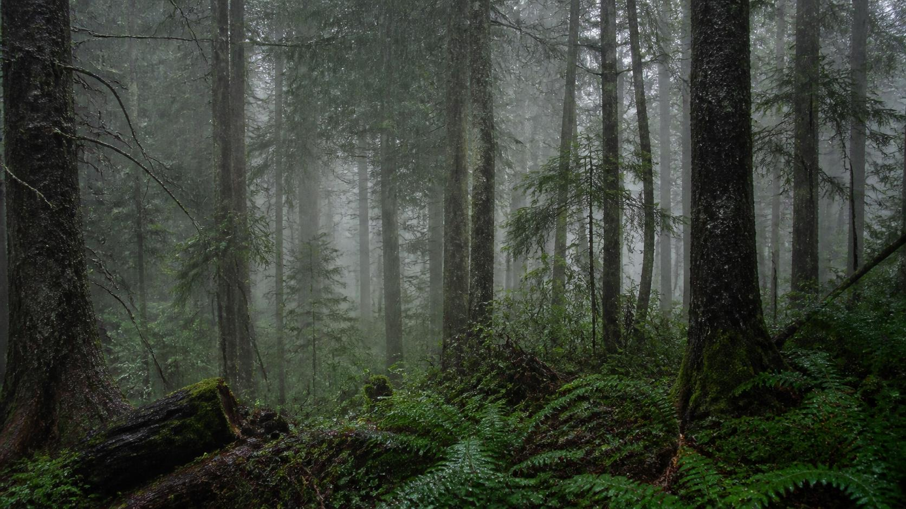
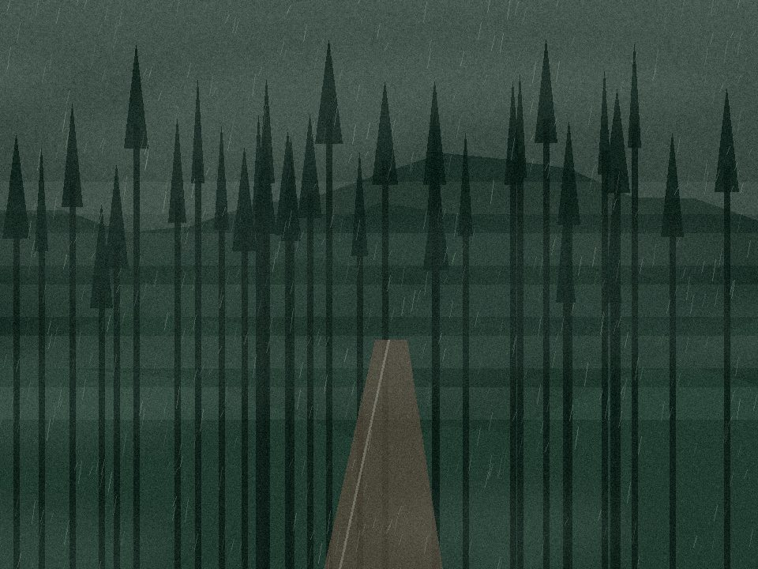
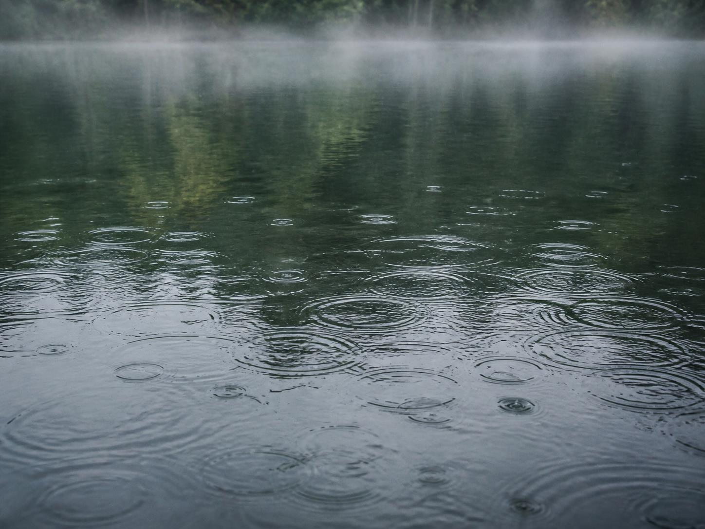

Mt. Fuji 2026
富士山へ行く前に、手続きを確認。
2026年は4ルートすべてで入山前の手続きが必要です。予約、4,000円の通行料・入山料、必須講習、時間帯による規制を先に確認してください。
2026年の富士登山ガイドを読む →
For visitors
Climbing Mt. Fuji in 2026
Entry rules, booking and the required steps for overseas visitors.
Read in English →